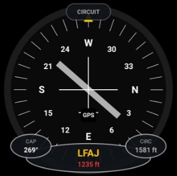

🛬
Circuit de piste
Conservateur de cap + altitude de circuit du terrain le plus proche
ANLCCT · analogique

Possibilités
- Conservateur de cap : rose des caps rotative (graduations tous les 10°, cardinaux N/E/S/W), curseur fixe en haut, silhouette avion au centre.
- Curseur jaune (triangle) à l'index du haut : repère fixe du cap courant.
- QFU de la piste du terrain le plus proche tracé en travers de la rose (piste primaire).
- Trois lobes : CAP (cap actuel), centre = ICAO + altitude du terrain proche, CIRC = altitude de circuit = altitude du terrain + 1000 ft (circuit VFR standard).
- Lobe d'altitude coloré : rouge sous le circuit, vert à ±50 ft, jaune au-delà.
- Pastille de titre affichée en haut du cadran (masquable via Options ▸ « Masquer le titre »).
Gestes
– Appui long : —
·· Double-tap : —
Note
- Terrain le plus proche résolu dans un rayon d'environ 15 km (annuaire + vos terrains géolocalisés), recalculé tous les ~550 m.
- Nécessite une position GPS. Indicatif, non certifié.